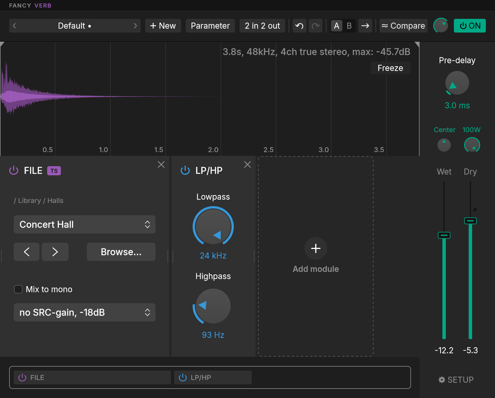

docs/verb.md, Phase 4 Wave 1. New things in dashed yellow, on the plugin's real screenshot (1x coordinates).
1 · The EQ module
A new card from the add panel, in the rack like LP/HP: a small response curve and three bands (low shelf, bell, high shelf) as tight knobs in the module blue. It shapes the IR, offline, so it costs nothing while playing.

⏻EQ
×
LOW SHELF
BELL
HIGH SHELF
A band at 0 dB does nothing. Older Verbs drop the card and play the IR without it.
2 · Library search and favourites, and Export IR
The library menu gets a search field at its top (by name and category, as you type) and a star on each row; starred IRs are listed first under Favourites, kept in your settings, not in projects. Right-click the IR display (or the File card's menu) for Export IR…: the finished IR, after trim, as a 24-bit WAV.
🔍 hall
FAVOURITES
✓ Concert Hall★
HALLS
Chamber Hall☆
Large Hall☆
Stone Hall☆
Export IR…
Reset trim
3 · Drag and drop
Dragging an audio file over the rack tints it; dropping adds a File module with that file at the end of the chain (or replaces the selected File module's file).
Drop to add a File module: Bright Room.wav
Equal loudness (Decision 1 A) is one checkbox in the SETUP drawer, with the applied trim beside it, so it isn't drawn here.